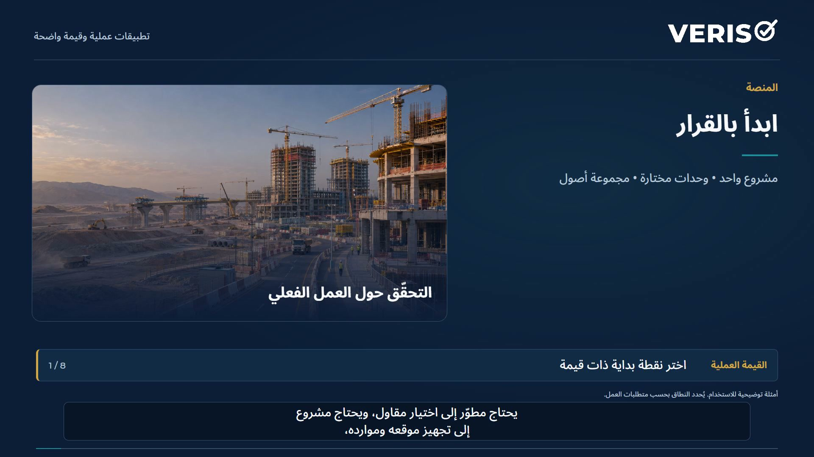
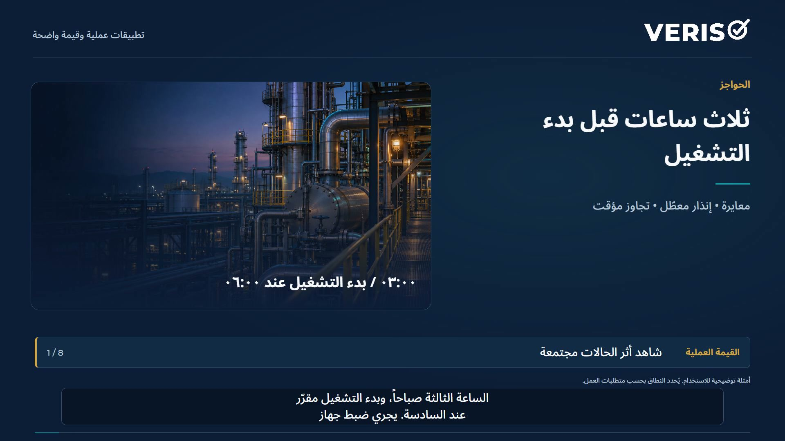

سيناريوهات عملية · 2:34
تقرير حواجز الحماية في الممارسة
قارن دراسات المقاولين وراجع المستندات المقدمة وحدد الفجوات المتكررة عبر محفظة الأصول. تدعم الأدلة المنظمة قرارات المهندسين المسؤولين.
يمكن إظهار النص المصاحب من أدوات المشغّل. ويتوفر النص الكامل أدناه.
أمثلة تطبيقية توضح كيف تُستخدم المعلومات والأدلة في المراجعة واتخاذ القرار. وهي ليست دراسات حالة لعملاء.
اقرأ النص الكامل
يقدّم ثلاثة مقاولين ثلاث دراسات للمخاطر ضمن مشروع واحد. تختلف الصيغ ومستويات التفصيل. وقبل قبولها، يحتاج المطوّر إلى معرفة ما إذا كانت كل دراسة تتناول المتطلبات نفسها. هذا أحد استخدامات تقرير حواجز الحماية من فيريسو.
ينظّم التقرير الدراسات القائمة في صورة أخطار وأسباب وعواقب وحواجز حماية مترابطة. وترتبط مخططات ربطة العنق والسجلات وأسئلة المراجعة بمصادرها. وتظل المواد غير الواضحة ظاهرة، ليحصل المهندسون على أساس مشترك للفحص.
طبّق قائمة مراجعة متفقاً عليها على كل دراسة مقدّمة. افحص تغطية السيناريوهات والافتراضات ووسائل الحماية والإجراءات المفتوحة. سجّل النواقص ووجّه أسئلة محددة لمعالجتها. وتبقى القرارات الفنية لدى فريق الدراسة والمهندسين المخوّلين بالاعتماد.
عبر مجموعة الأصول، تساعد مخرجات الدراسات القابلة للمقارنة المراجعين على معرفة أين عولجت أخطار متشابهة بطرق مختلفة. احتفظ بالسياق التصميمي لكل أصل، وحدّد المصطلحات غير المتّسقة والسجلات الناقصة والأسئلة المتكررة. ثم رتّب الدراسات التي تحتاج إلى اهتمام هندسي.
للمشروع الجديد أو تحديث الدراسة، ابدأ بأوراق عمل منظّمة وقوالب مناسبة للتقنية المستخدمة. كيّف المسودة الأولى مع العملية الفعلية وظروف التشغيل. ويتولى فريق الدراسة فحصها ونقدها. يمكن نقل المنهج والهيكل، أما معلومات عميل آخر فلا تنتقل.
ويمكن للمشغّل أيضاً مراجعة مجموعة دراساته الحالية لاكتشاف الأنماط الناشئة: تفاصيل ناقصة، أو مسؤوليات غير واضحة عن الحواجز، أو علاقات اعتماد تحتاج إلى فحص. والنتيجة قائمة أعمال هندسية محددة. يصف التقرير الدراسات، بينما تتطلب حالة المنشأة الحالية أدلة تشغيلية.
يمكن للمطوّر أو صاحب المشروع أو المستشار الفني للمقرض استخدام الأدلة المنظّمة نفسها عند مراجعة الدراسات المقدّمة. ويظل المتطلب المتفق عليه ومرجع الدراسة والسؤال والإجابة مترابطين، لتستند مناقشات القبول إلى أساس واضح وقابل للفحص.
استخدم التقرير لدراسة واحدة، أو لمراجعة تسبق الاعتماد، أو لإعداد قالب قابل لإعادة الاستخدام، أو لتحقيق الاتساق عبر مجموعة أصول كاملة. وتكمن القيمة في تقليل وقت إعادة تنظيم المعلومات، وتخصيص وقت أكبر لفحص الأخطار ومعالجة الفجوات واتخاذ قرارات هندسية قابلة للتتبّع.
استكشف المنتج وسيناريوهات أخرى
 2:23
2:23فيريسو: تقرير حواجز الحماية
تحويل دراسة المخاطر إلى تقرير مترابط يوضح الأخطار وحواجز الحماية والمسائل التي تحتاج إلى مراجعة هندسية.
شاهد الفيلم
2:27منصة فيريسو في الممارسة
من اختيار المقاولين وجاهزية بدء العمل إلى الضوابط الميدانية ورفاه العاملين وتحسين نظم الإدارة. شاهد كيف تدعم الوحدات المختارة قرارات مختلفة.
شاهد السيناريو
2:27حواجز فيريسو في الممارسة
تابع سيناريو بدء التشغيل والاعتماديات المشتركة وأوجه القصور والقرارات التشغيلية، ثم استكشف مراجعات محفظة الأصول والتأمين والمقرضين.
شاهد السيناريو